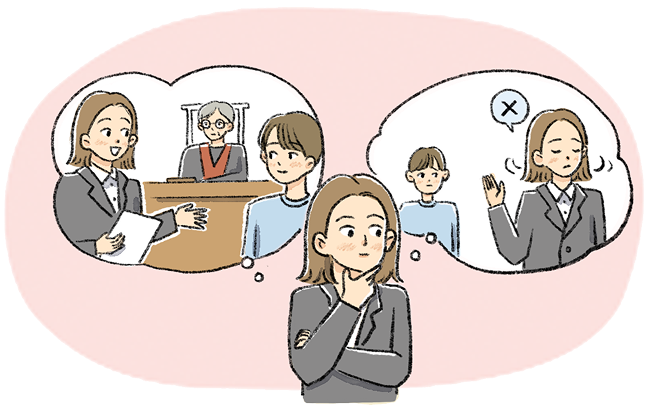

생각특수 직업윤리
 변호사 이 씨는 한 의뢰인의 변호를 맡게 되었다. 변호사는 의뢰인의 말을 믿고 성실하고 책임감 있게 의뢰인을 변호해야 하지만, 변호사 이 씨는 자꾸만 의뢰인이 사 건에 대해 거짓말을 하고 있다는 생각이 들 었다. 이에 따라 변호사 이 씨는 의뢰인의 변호를 그만두어야 할지, 아니면 의뢰인의 거짓말을 모르는 척하고 변호해야 할지 깊은 고민에 빠졌다.
- 『법률방송뉴스』, 2017. 9. 19.
●
사례 2 에서 변호사 이 씨는 변호사의 어떤 직업윤리 때문에 고민하고 있는지 생각해 보자.
변호사 이 씨는 의뢰인을 그대로 변호해야 할지, 아니면 의뢰인의 거짓말을 파악하고 정의를 실현하기 위해 변호를 그만두어야 할지 고민하고 있다.
●
변호사와 같은 전문직에게 필요한 직업윤리가 무엇인지 찾아보자.
전문직은 개인이나 사회에 미치는 영향력이 크기 때문에 높은 수준의 도덕성을 바탕으로 책임감 있게 업무를 수행해야 한다.